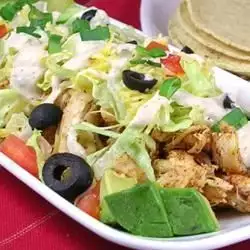

Ranch Chicken Tacos Recipe

Description
These ranch chicken tacos are a great change from regular Mexican-style tacos.
A quick, cool summer dinner made with leftover rotisserie chicken.
Naturally, you can use any type of chicken cooked the way you like;
just be sure to shred it for real tacos.
Ingredients
- 1/4 Cup ranch dressing
- 1/4 Cup reduced-fat sour cream
- 1 (1 ounce) Packet taco seasoning mix, divided
- 1 tablespoon mild chunky salsa
- 2 Cups shredded rotisserie chicken
- 8 (6 inch) corn tortillas
- Shredded lettuce
- 1 tomato chopped
- 4 green onions, sliced
- 1 (4 counce) can sliced black olives
- 1 Avocado - peeled,pitted and diced (optional)
- 1 cup shredded Colby - Monterey Jack cheese
Steps
- Marinate the Chicken: In a large bowl, combine the ranch dressing,
taco seasoning, and olive oil (if using).
Add the chicken pieces and toss to coat evenly.
Cover the bowl and marinate in the refrigerator for at least 30 minutes,
or up to overnight for deeper flavor
- Cook the Chicken: Heat a large skillet or grill pan over medium-high heat.
Add the chicken pieces (discarding any leftover marinade) and cook for 5-7 minutes per side,
or until cooked through and golden brown.
- Warm the Tortillas: While the chicken cooks, warm the taco shells
according to package instructions. You can warm them in a skillet
over low heat, in the oven, or in the microwave.
- Assemble the Tacos: Evenly distribute the cooked chicken among the
warmed tortillas. Top with your favorite taco toppings like shredded
cheese, lettuce, tomato, red onion, cilantro, and a drizzle of ranch
dressing (optional)